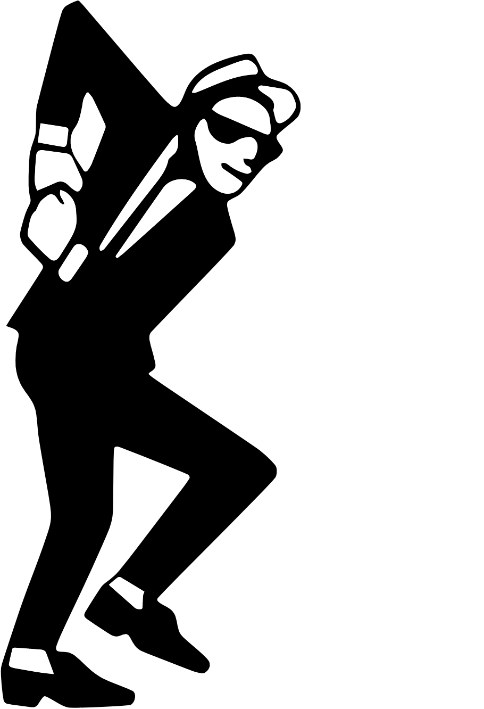

Letras oficiales, canciones y música de Los Hijos de Tencha, agrupación costarricense de cumbia y fusiones latinoamericanas.
Letras oficiales y música de nuestra historia.
Escuchar canción
Vuelvo a pasar por donde siempre asustan Vuelvo a caerme y a levantar Vuelvo a escuchar la voz que llevo adentro Vuelvo a transformarme en un animal Y nunca sigo la corriente / siempre tengo que luchar Y siempre vuelvo a mi colmena / donde me van a cuidar El guaro agita las caderas / esta noche es pa’ bailar Y que se sientan los de Tencha / Los hijos te cantaran Y se también que este vaivén te cae muy bien Al ritmo de esta noche te bailare Enséname tus pasos prohibidos ven La noche esta joven arráncate Y no puedo decirte que pasara Pero esta noche juro te comerá Conmigo estoy seguro que acabarás Al ritmo de esta cumbia me atraparas Y nunca sigo la corriente / siempre tengo que luchar Y siempre vuelvo a mi colmena / donde me van a cuidar El guaro agita las caderas / esta noche es pa’ bailar Y que se sientan los de Tencha / Los hijos te cantaran
Escuchar canción
Esa mirada de niña idiota, esa locura que no se fue La situación que un día dejamos sin saberlo bien Aquel silencio que me engañaba, aquel murmullo que ya no está Esa ilusión que nos deja ciegos quisiera volver, quisiera volver Quisiera volver a donde fui Quisiera volver, pero volverme a venir Quisiera entrar a donde entré una vez Pero volverme a salir Esa mirada de gas nocivo, la valentía de un maricón Te quiero muerto te quiero vivo y te digo adiós Y si al final ya no resucitan Aquellas ganas de un mundo mejor Me quedo muerto me quedo vivo Y te digo adiós y te digo adiós Quisiera volver a donde fui Quisiera volver, pero volverme a venir Quisiera entrar a donde entré una vez Pero volverme a salir
Escuchar canción
Somos historias, lágrimas y desafíos Somos sueños humildes y perdidos Aprendimos a sanarnos las heridas con cerveza Una mente que hace que se vuele tu cabeza Cultivando la esperanza que tenemos Unos viejillos sinceros No somos famosos, pero somos de los buenos Malditos viejos cumbiancheros Empezamos a ser libres y a mejorar Cuando dejamos de esperar algo de los demás El puño arriba y el grito fuerte Que viva la música por siempre Y cuidadito ya estamos presentes Acá llegó el más loco de este poco de dementes Tercos como mula sin dientes, el cuero nos aguanta fuerte Avanzaremos como un huracán con rumbo Que se extiende que se siente que te hace vibrar La mala vibra no cabe no acá Somos un cuento sin terminar Aprendimos a curarnos las heridas con cerveza Una mente que hace que se cuele tu cabeza Cultivando la esperanza que tenemos Unos viejillos sinceros… Esto comienza sencillo como baba de chiquillo Como darle a tus nalgas con chilillo Contagioso, bondadoso en ese culo hermoso reposo Pa adelante constante Camaleón cambiante, dominante Cada cual para su saco jala Cada cual a su gallada ampara Estamos perdidos en el mismo norte Somos parte del mismo corte Y me vale verga lo que piensen de mí Me vale verga lo que hablen de mí Yo soy el mismo sencillo bolsillo, corrido Calabaza cada quien para su casa Los perros ladran porque uno avanza ¿Lapa roja, lapa verde, lapa qué? La panocha Más corriente que un eructo de salchichón Pa’ que me invitan si saben cómo soy huevón Cada cual para su saco jala Cada cual a su gallada ampara Estamos perdidos en el mismo norte Somos parte del mismo corte Me vale verga lo que piensen de mí Me vale verga lo que hablen de mí Yo soy el mismo sencillo bolsillo, corrido Calabaza cada quien para su casa Los perros ladran porque uno avanza ¿Lapa roja, lapa verde, lapa qué? La panocha
Escuchar canción
Ya se escuchan sus pasos El chilillo está caliente El toro ya llegó El baile de los diablitos arrancó Atrápalo que se come tu alma Mátalo que se come tu calma Somos aquellos sentenciados, olvidados, masacrados y perdidos al olvido Llenos de nada, rabia y convicción La cumbia del diablo, la cumbia del diablo Mamá alcánzame la lanza Que hoy la máscara se ensangra Las Biritecas llamaron a formación Hoy cae el palenque de los malditos Y bailaremos en los cuernos del animal La cumbia del diablo, la cumbia del diablo Dame la chicha que me hierven las manos Que nuestros sueños han sido masacrados El baile de los diablitos arrancó Dame la chicha que me hierven las manos Que nuestros sueños han sido masacrados El juego de los diablitos comenzó La cumbia del diablo, la cumbia del diablo No hubo héroes solo asesinos No hubo héroes solo asesinos No hubo héroes solo asesinos No hubo héroes solo bandidos
